— Не помню когда. Давно. —
Детство
У нас не было имени на картах. Просто три оврага, сходящихся в грязную балку, десяток хат, где дым ел глаза, а доски гнили под весом снега. Отец месил глину для печей. Мать пряла шерсть и знала, какие коренья сбивают жар, а какие закрывают открывают глаза навечно.
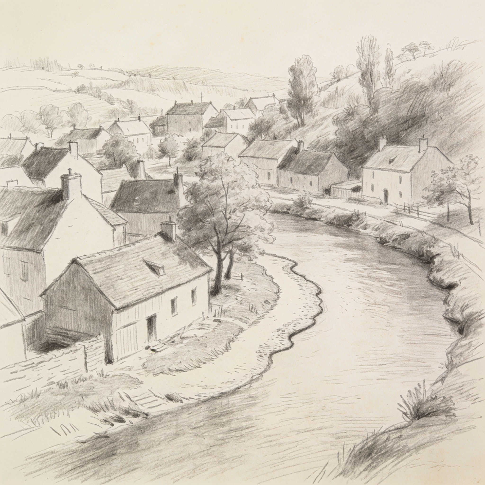
Я был обычным пацаном. Бегал босиком по крапиве, срывал колени, плакал, когда шиповник впивался в ладонь. Жизнь казалась простой и счастливой ∗ ничего сложнее, несмотря на нашу бедность.
Однажды ночью на деревню опустился туман. Отец серьёзно заболел, когда вышел проверить, что за окном. Через несколько недель я помогал матери закапывать его. Плакал над могилой громко, по-детски.
Дальше было хуже. В деревню стали заходить странные люди — красные одеяния, ритуальные украшения. Мать велела мне не подходить к ним. Говорила, что это плохие люди. — тогда я ещё верил, что есть «плохие» и «хорошие»… наивный.
В одну из ночей она спрятала меня под пол. Потом тело матери рухнуло на деревянный настил и придавило люк. Я просидел в темноте три дня. Пил воду, скопившуюся в щелях. Ел ничего нечего.
Потом пришли другие. Люди в тяжёлой броне, с гербами на плащах. Меня полуживого вытащили из-под пола и бросили к остальным детям в клетки. Выдали ломоть чёрствого хлеба и кружку воды. Я был одной ногой в могиле.
Пришёл старший инквизитор: — Я буду отвечать за ваше поосвящение. Многие умрут на месте. Кто-то станет безумцем.
Раскалённый герб ордена приложили к моей руке. Кожа зашипела. Из бутылька на ожог капнули чёрную жидкость. Она впиталась мгновенно быстро. Вспомнить могу только одно: как я корчился и желал умереть.
На третий день меня облили холодной водой — посвящение пройдено. Хоть и с дефектом. Моя кисть почернела.
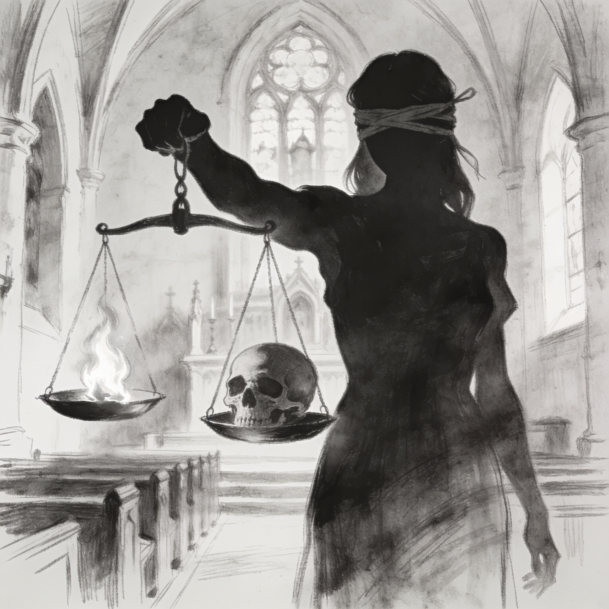
Нас учили стоять, бить и не падать. Деревянные палки оставляли синяки, которые не сходили месяцами. За каждое проявление слабости — стояние на горохе и плети. Со временем разум становится чище, а мысли яснее.
Метка никак себя не проявляла — клеймо, что я прошёл первое посвящение.
Дальше нас учили читать и писать. Книги о монстрах, о том, как их бить, что нужно вырезать и где искать. Я возненавидел эти книги. — «Вырезать» — мерзкое слово. Они не писали «убить». Они писали «вырезать». Как скот.
Когда мне в первый раз доверили меч — он был тяжёлый, неудобный и тупой. Я помню, как долго дрался со своим первым мертвецом. Рубил всё, что попадалось, оружие вязло в плоти, а он всё не падал. Слёг с лихорадкой на пять дней.
Нам предстояло закалить клинки в собственной крови. Мы резали руки и капали на сталь. Клинок оказался лёгким, словно продолжение руки. Я назвал его «Валькирия».
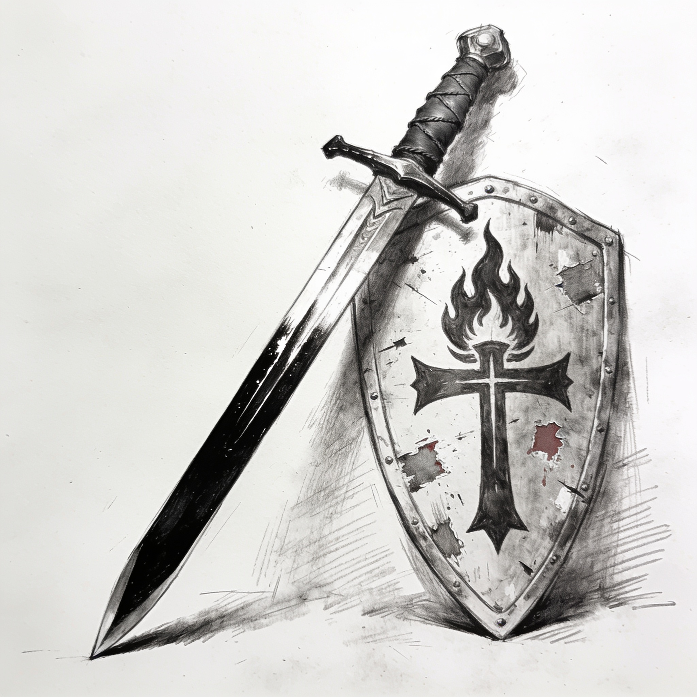
Но потом сменился глава ордена. Приезжий вельможа раздавал приказы, не вникая в суть.
Мы стали боевой силой на службе короны. Помню первый штурм — я бежал впереди, закрываясь щитом от стрел. Маг получил стрелу в горло. До сих пор снится, как он захлёбывался кровью.
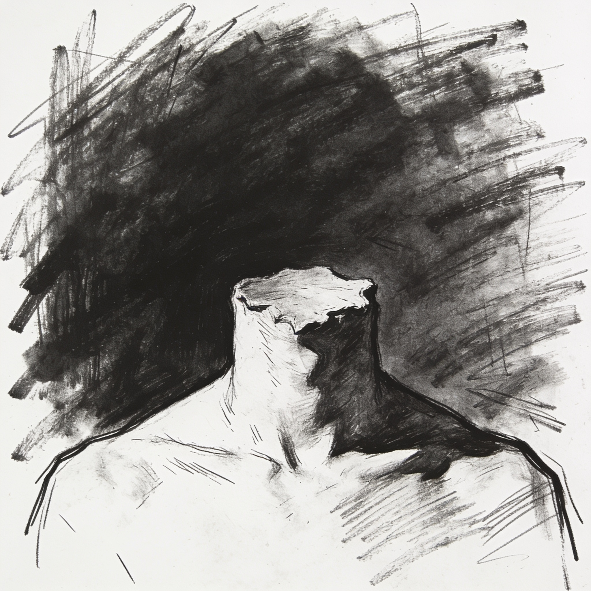
Мы резали людей, как на скотобойне. У каждого была семья. Ненавижу войну.
После захвата территорий к нам приводили детей из завоёванных земель. Ритуал они не переживали — я видел, как они разбивали головы о каменный пол.
Свет богини угасал. Рука начала ныть — кузнец выковал перчатку, прибитую прямо к плоти. Рука до локтя в чешуйчатой стали.
Я пошёл к командиру: — Если считаешь, что достоин большего — просто иди. Я подам рапорт о твоей гибели.
Ушёл ночью. Моё имя — Элеонор Мелрот — отмечено как «погибший».
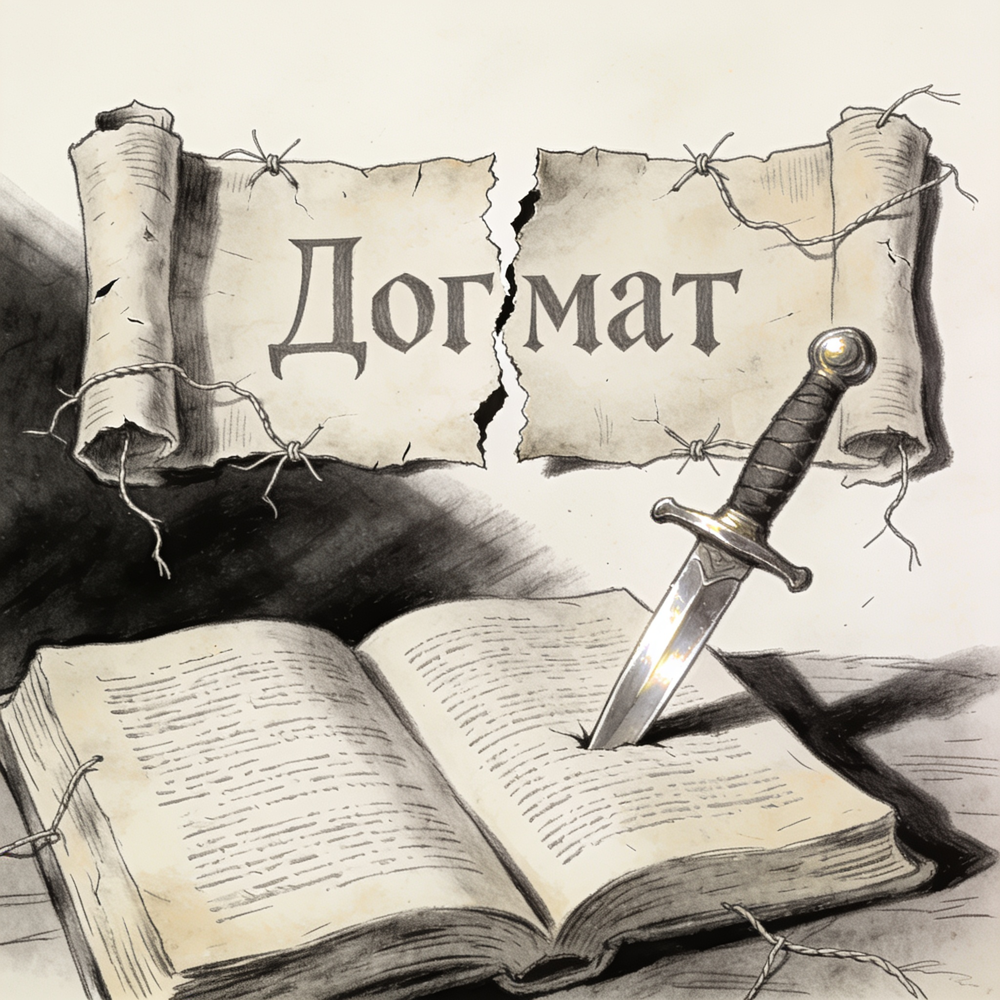
Через три недели я вступил в гильдию авантюристов. Взял имя Артур Могрейн.
В команде работал редко — зачистки нежити. Свет вернулся. Я вернулся к цели — искоренить зло.
Часто думал, что это будет последняя вылазка. Нежить меня загрызёт, и я останусь гнить в канаве.
Первая работа в команде — идиоты штурмовали логово культистов огненным шаром, крича: «ВЫХОДИТЕ ПОИГРАТЬ!»
В том бою мы потеряли воина — плут неправильно взломал ловушку, беднягу пронзили шипы.
Другой отряд — полгода работы, пока лидер не ушёл жениться. Удачи им.
Год выдался спокойным: у бабки украли сковородку, скрипучее дерево чудилось воем покойной жены.
Одно задание запомнилось — неопытный волшебник случайно поднял мертвеца, не смог его контролировать и запер в комнате. Долго читал ему лекцию о некромантии.
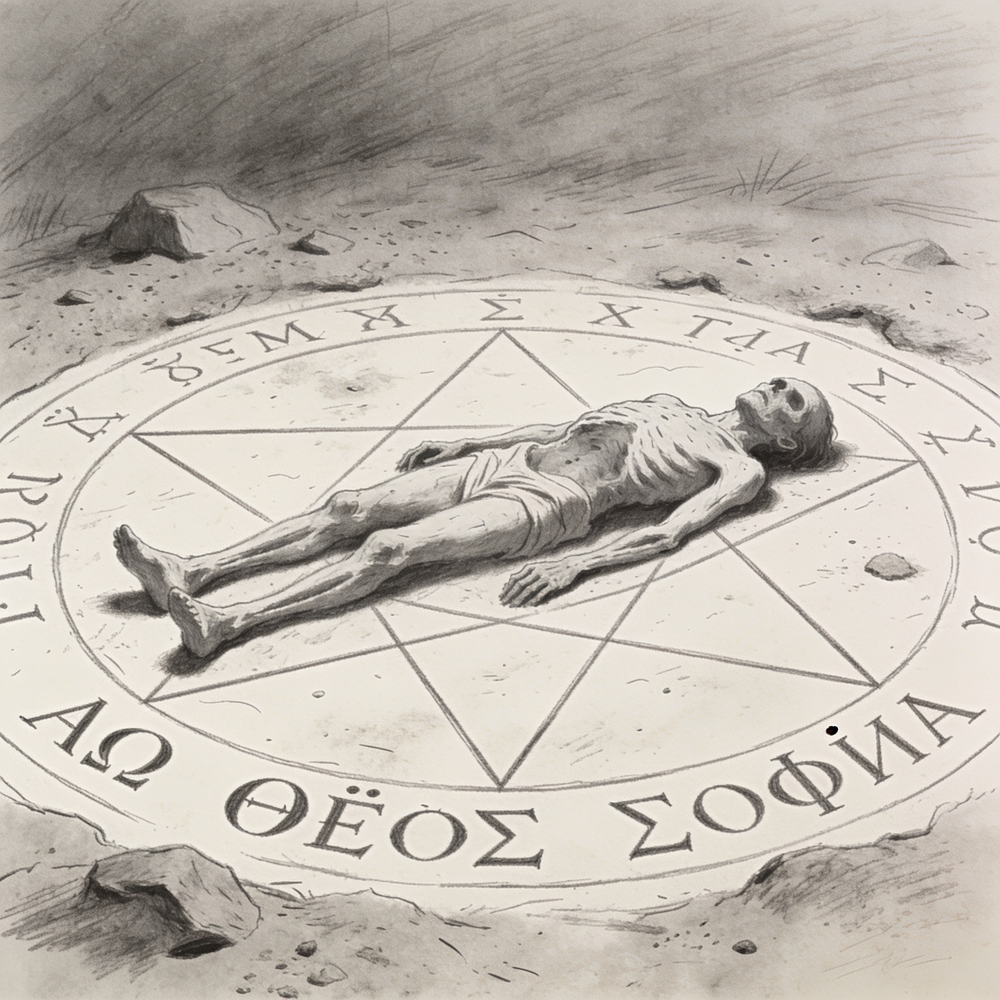
Решил снова вступить в отряд. Тяжело назвать их группой — скорее кружок несостоявшихся интересов. Я не понял, что объединило Дроу и Человека вместе.
Женщина-цыганка, представилась Азой, бард. Вечно называет меня «красавчиком» и просит помочь с вещами, словно носильщика. — богиня, за что ты послала мне это испытание?
Дроу — Мальбрин. Вскрывает замки, смотрит с прищуром — но мой кошелёк никогда не пропадал. Уже плюс.
Первый раз я решил с ними на простое задание… я так думал.
Аза нашла «лёгкие деньги» — поговорить с каким-то парнем и достать шкатулку. Я должен был стоять на стреме. Я долго доказывал, что воровать — грех, и богиня покарает их души… на что я рассчитывал?
Я решил пойти и поговорить напрямую. Головорезы даже не стали слушать. Но когда я услышал, что они торгуют детьми…
Очнулся с четырьмя колотыми ранами. Вокруг лежало восемь тел. Отводил детей по домам, от меня жутко пахло кровью. Свою долю не взял.
После мы отправились в другой город, где встретились со знакомой знатной дамой — Баронессой. Я старался молчать и слушать. Задание оказалось простым — за скромную, но честную награду.
Мы прибыли к шатрам на окраине города — к вистани. Первым делом я попытался договориться по-старому — указать, что им тут не рады. Но Аза остановила: «Договорюсь сама». Согласен, ряженые между собой сговорятся быстрее.
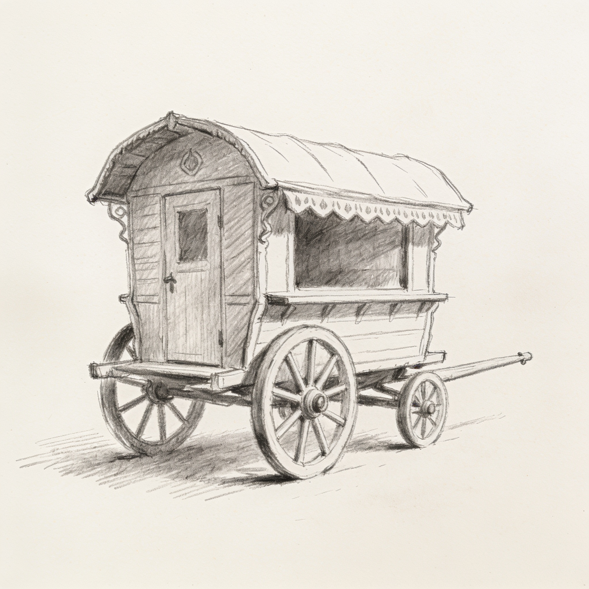
Утром сообщили — Аза договорилась. Мы едем с ними в другие земли. «Интересное приключение». Я отнёсся скептически. Но раз уж я с ними — поехали.
Мы ехали несколько дней в повозках. На удивление ничего не происходило, хотя тревожное чувство не покидало. Мы движемся к чему-то неизведанному.
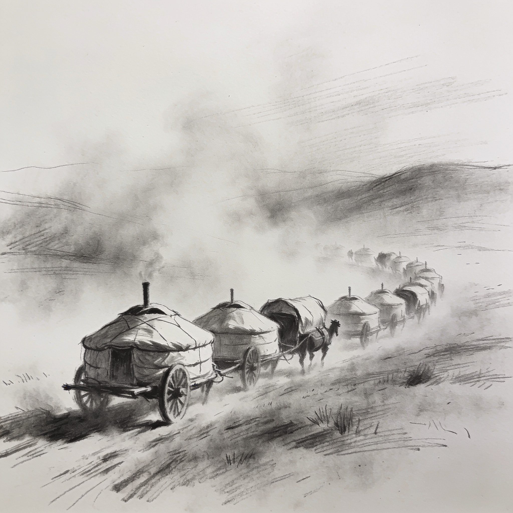
Мы прошли через магический туман. Моё чутьё вопило об опасности. Первое, что увидели — ворота деревни. Грустная небольшая деревня со статуей бургомистра.
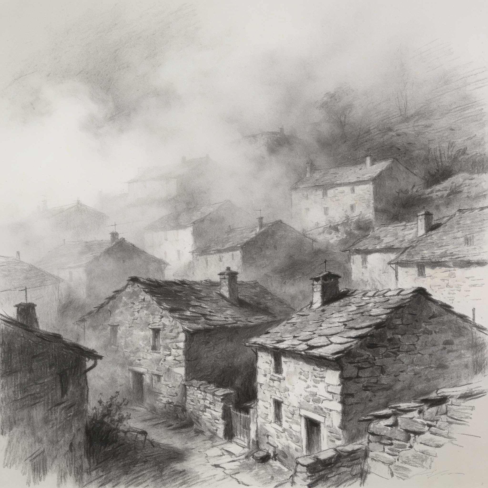
Жители поникшие, словно смерть висит над ними и не отпускает. Письмо, что мы везли, содержало призыв о помощи — спасти дочь бургомистра.
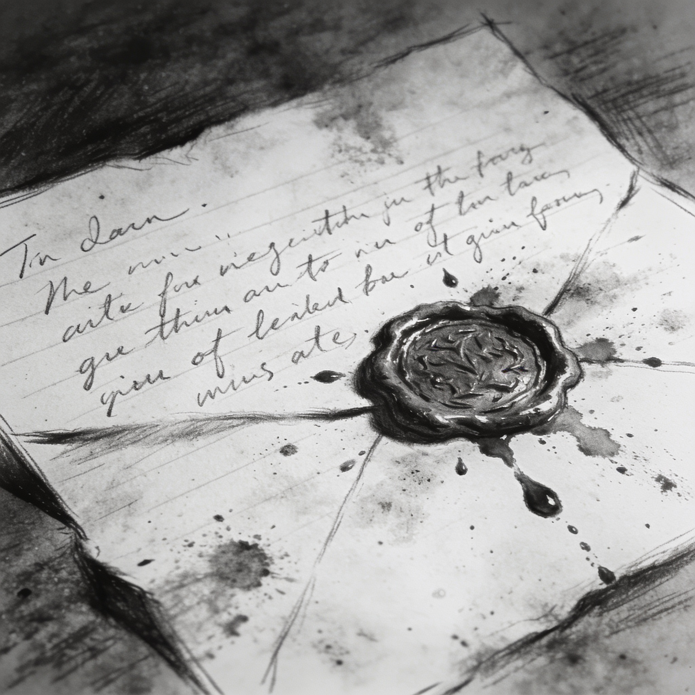
На постоялом дворе хозяин отказал в ночлеге — отправил спать в хлев. Я хотел разбить ему морду, но Аза его окрутила уговорила.
Исмарк Колян — сын покойного бургомистра. Несмотря на перепалку, предложил остановиться у него. В доме — следы когтей, окна заколочены. Дом выглядел заброшенным, но в нём жили.
Сверху спустилась его сестра — Ирина. На шее следы укусов, но она ещё человек. Первая просьба — помочь похоронить отца. Священник отказывается выходить из церкви.
Ближе к ночи восстали души мертвых и пошли на выход из деревни — куда-то вглубь земель. Запомнился один — толстый дварф с повязкой на глазах. Даже после смерти лицо было счастливым и верным идеалам.
А утром… самое ужасное утро в жизни. Никогда не забуду этот сон — он был наяву. Все видели одно и то же.
Двое детей у входа в дом. Сказали, что потеряли сестру. Как только переступили порог — дети исчезли. Дом оказался пуст.
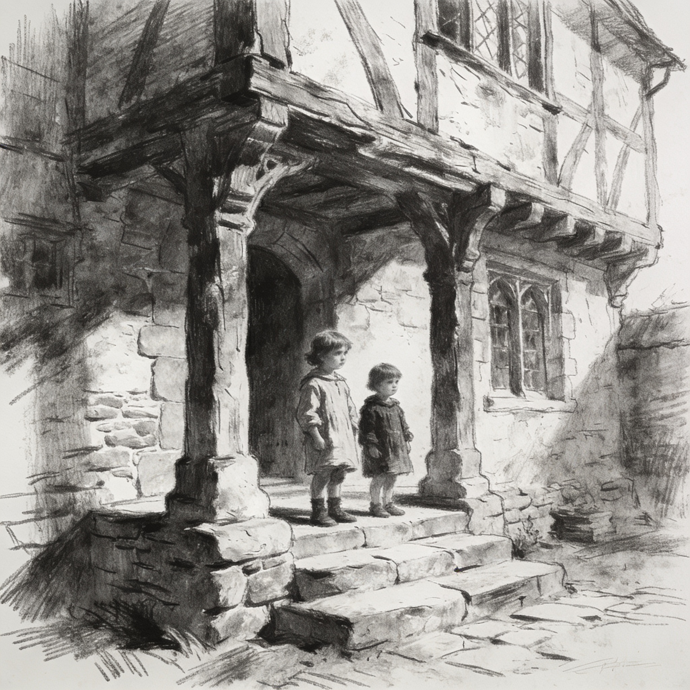
Я чувствовал себя одновременно собой и не совсем. Дом выглядел так, словно в нём жили только что — и одновременно давно. Первый враг — живой доспех. Его было легко уронить.
Записки, письма, детские кости. Я решил похоронить детей — нельзя обрекать мёртвых лежать без упокоения.
Первая серьёзная угроза — Баньши. Ненавижу призраков — без магии их почти не убить. Повезло, нашли свитки. Неупокоенная душа служанки — её сын умер при родах.
Через тайные ходы вышли в подвал. Рука задрожала — я почуял мерзость. Первым делом нашли склеп — я аккуратно сложил кости детей, закрыл крышку и помолился за упокой их душ.
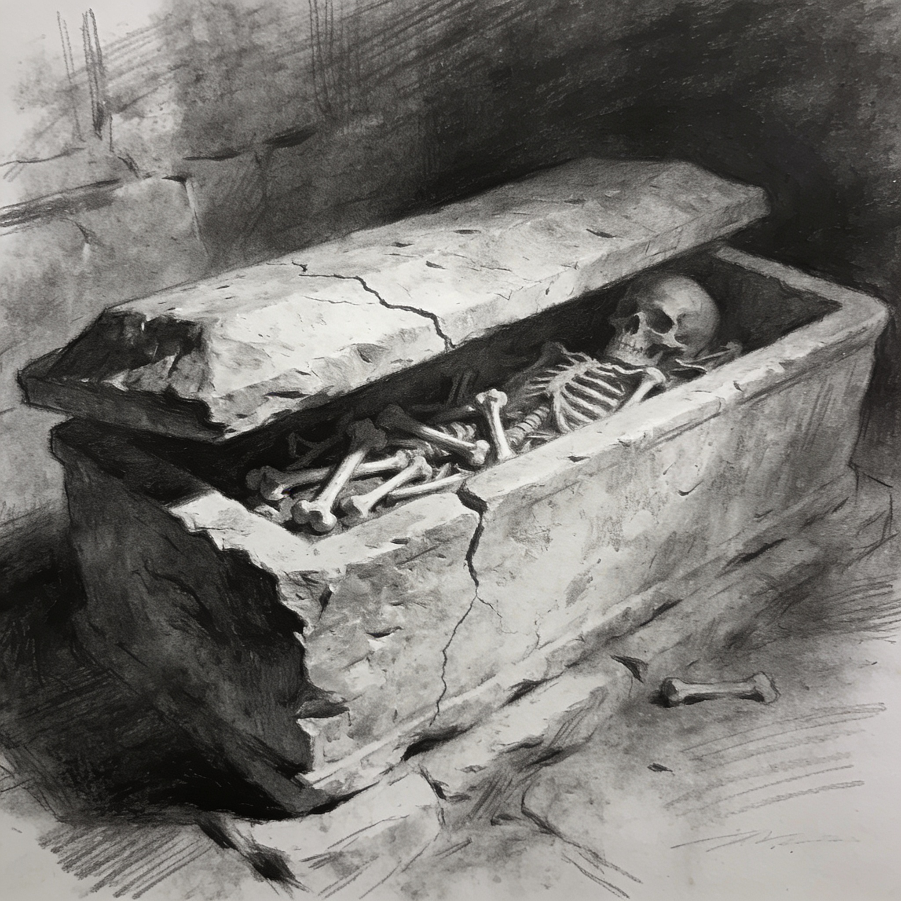
Закончив с детьми, вышли к мусорной куче, которая оказалась монстром. Еле закололи. А когда встали на постамент — услышали голоса. Это было место ритуала — от нас требовали жертву.
Мои чувства опасности вопили — я понял, кто перед нами… ИСТИННОЕ ЗЛО.
Впервые видел столь ужасного монстра.
СТРАД ФОН ЗАРОВИЧ.
Утром остальные подтвердили, что видели тот же сон. Я чувствовал тепло богини — она направляла меня.
Переговоры со священником прошли гладко. Не считая его сына — отродья из подвала, которое вопило, чтобы отец отпустил его. Моя рука дрожала, воля требовала отрубить ему голову, но группа уговорила меня…
Самое шокирующее было другое — маленькая дварфийка-друид у порога церкви. Засранка Особа представилась ученицей некроманта. Я хотел снести ей голову, а потом она заявила, что была мужчиной. Я посчитал, что девочку одолел недуг разума. Я пощадил дитя.
Мы взяли Кенну с собой. Выкопали могилу для Коляна Индировича. Я разминал серебро, делал святую воду.
Пока работал — Кенна закричала: «ВАМПИР ВЫБРАЛСЯ!» Священник уверял, что он заперт надёжно. КАК ОН ВЫБРАЛСЯ.
Я достал клинок. Валькирия вспыхнула золотым пламенем. Рука налилась божественным светом — но старик-священник помешал, клинок скользнул. Голова упыря осталась на месте.
В этот вечер я отпевал не только Отца и Бургомистра, но и Священника, и Преданного отца. Похоронил их по традициям ордена — как воинов — чтобы души вознеслись к богине, где их ждёт искупление.
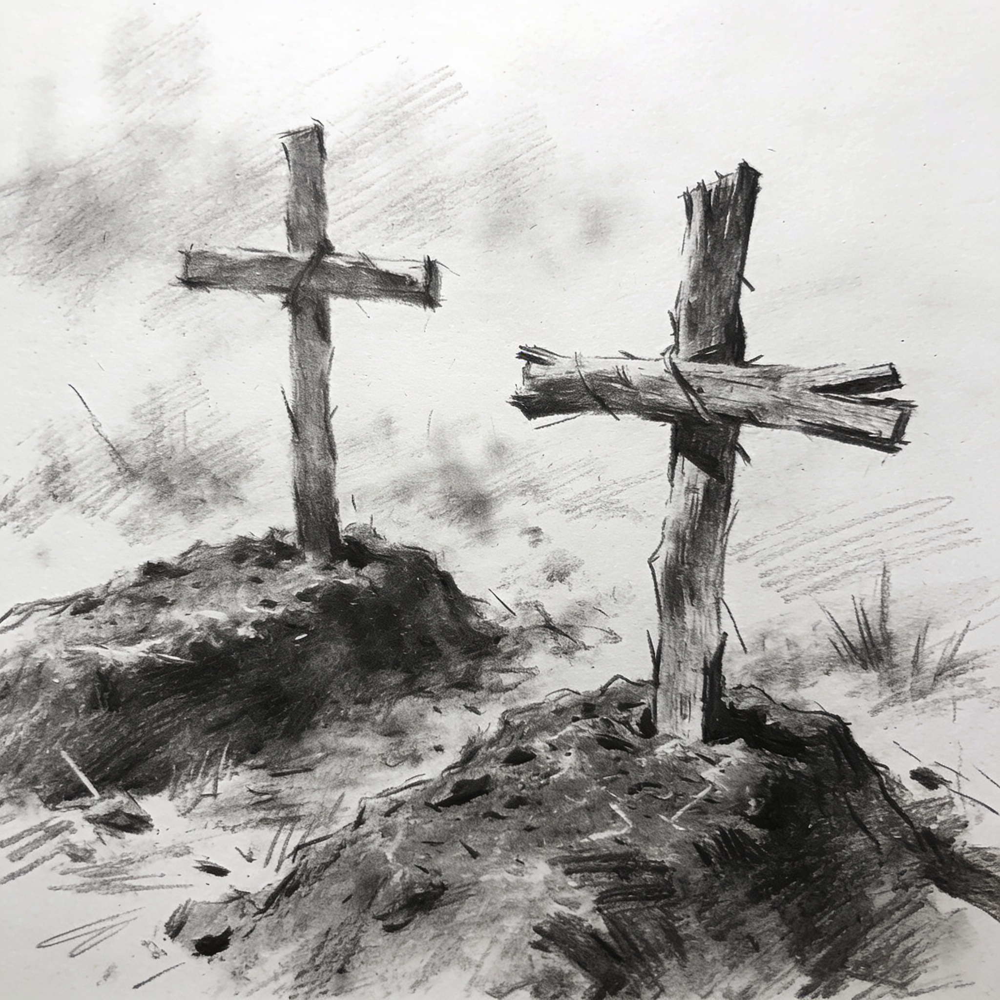
Мы покидали деревню с тяжёлым сердцем. Я выразил соболезнования Исмарку и Ирине.
Мы встретили странную старую гадалку из Вистани — Мадам Еву. Она сказала, что мы не первые, кто попадает сюда, но в нас она видит потенциал. Карты не врут.
Я записал её гадания. Чтобы не забыть.
Ⅰ. Узнать врага и его слабости
Карта — Гадалка. «Смотрите на ту, кто видит всё. Сокровище спрятано в её лагере»
Ⅱ. Святой символ Равенкинд
Карта — Паладин. «Я вижу спящего принца, слугу света и брата тьмы. Сокровище покоится с ним»
Ⅲ. Солнечный меч
Карта — Вор. «Искомое лежит там, где пересекаются жизнь и смерть, средь похороненных мертвых»
Ⅳ. Союзник
Карта — Туманы. «Вистанийка бродит одна в поисках ментора. Ищите её у аббатства Святой Марковии»
Ⅴ. Исход
Карта — Зверь. «Зверь восседает на своём тёмном троне»
Мадам Ева гадала о трёх драгоценных камнях великих фей.
● Красный самоцвет Горной Феи — карта Волшебник
«Повелитель звёзд… Мудрецы не всегда мудры. Ищите одинокую башню»
● Зелёный самоцвет Лесной Феи — карта Ворон
«Ужасный, мрачный и древний ворон, блуждающий по Ночному берегу. Не все существа таковы, какими кажутся»
● Голубой самоцвет Болотной Феи — карта Лекарь
«Пройдите дорогой не для кротких. Лекарь печали покоится в снегу. Его секреты с ним»
Мы в Баровии. Земле, затерянной в тумане, где правит тьма. У меня есть меч, вера и странная группа товарищей. Я не знаю, выберемся ли мы.
Я, Артур Могрейн, бывший каратель, ныне авантюрист, клянусь — я уничтожу зло в этих землях. Или умру, пытаясь.
Запись обрывается. Продолжение следует, если я останусь жив.
— А.М.